1.
| 2. 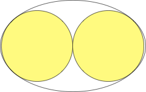 | 3. 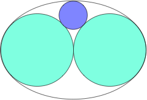 | ||
| Σ r = 1 Circular. | Σ r = 1.185+ Found by David W. Cantrell in September 2011. | Σ r = 1.407+ Found by David W. Cantrell in September 2011. |
| 4. 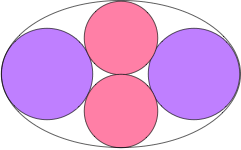 | 5. 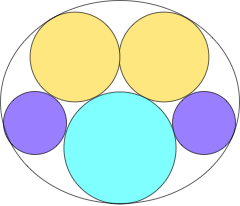 | 6.
| ||
| Σ r = 1.684+ Found by David W. Cantrell in September 2011. | Σ r = 1.887+ Found by David W. Cantrell in September 2011. | Σ r = 2.110+ Circular. Found by Veit Elser in November 2009. |
| 7. 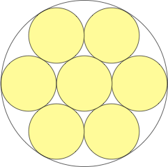 | 8.
| 9.
| ||
| Σ r = 7 / 3 = 2.333+ Circular. Found by Veit Elser in November 2009. | Σ r = 2.512+ Circular. Found by Veit Elser in November 2009. | Σ r = 2.660+ Circular. Found by Veit Elser in November 2009. |
| 10. 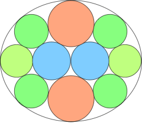 | 11. 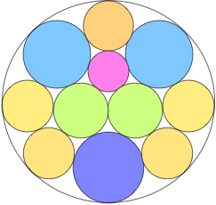 | 12. 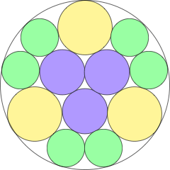 | ||
| Σ r = 2.809+ Found by David W. Cantrell in September 2011. | Σ r = 2.950+ Found by David W. Cantrell in September 2011. | Σ r = 3.103+ Circular. Found by Veit Elser in November 2009. |
| 13. 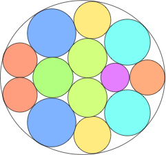 | 14.
| 15. 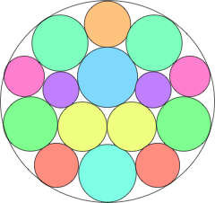 | ||
| Σ r = 3.231+ Found by David W. Cantrell in September 2011. | Σ r = 3.370+ Found by David W. Cantrell in September 2011. | Σ r = 3.485+ Found by David W. Cantrell in September 2011. |
16.
| 17. 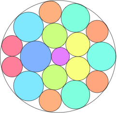 | 18.
| ||
| Σ r = 3.231+ Circular. Found by David W. Cantrell in April 2011. | Σ r = 3.732+ Found by David W. Cantrell in September 2011. | Σ r = 3.851+ Found by David W. Cantrell in September 2011. |
19.
| 20. 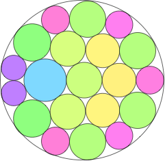 | 21. 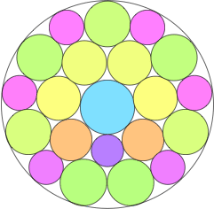 | ||
| Σ r = 3.981+ Circular. Found by David W. Cantrell in May 2011. | Σ r = 4.077+ Found by David W. Cantrell in September 2011. | Σ r = 4.182+ Found by David W. Cantrell in September 2011. |
22.
| 23. 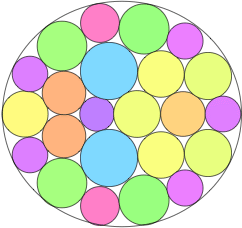 | 24. 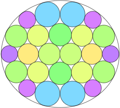 | ||
| Σ r = 4.287+ Circular. Found by David W. Cantrell in June 2011. | Σ r = 4.378+ Found by David W. Cantrell in September 2011. | Σ r = 4.478+ Found by David W. Cantrell in September 2011. |
| 25. 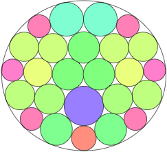 | 26. 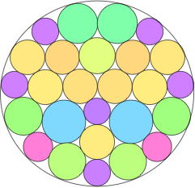 | 27.
| ||
| Σ r = 4.570+ Found by David W. Cantrell in September 2011. | Σ r = 4.667+ Found by David W. Cantrell in September 2011. | Σ r = 4.762+ Circular. Found by David W. Cantrell in June 2011. |
| 28. 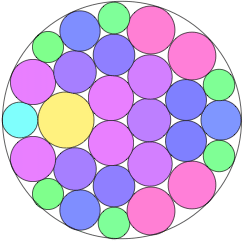 | 29. 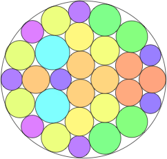 | 30. 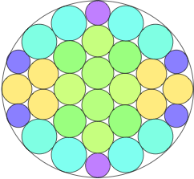 | ||
| Σ r = 4.849+ Found by David W. Cantrell in September 2011. | Σ r = 4.938+ Found by David W. Cantrell in September 2011. | Σ r = 5.030+ Found by David W. Cantrell in September 2011. |
| 31. 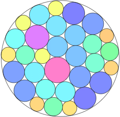 | 32. 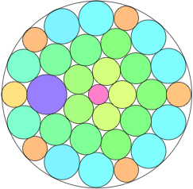 | |
| Σ r = 5.105+ Found by David W. Cantrell in September 2011. | Σ r = 5.192+ Found by David W. Cantrell in September 2011. |